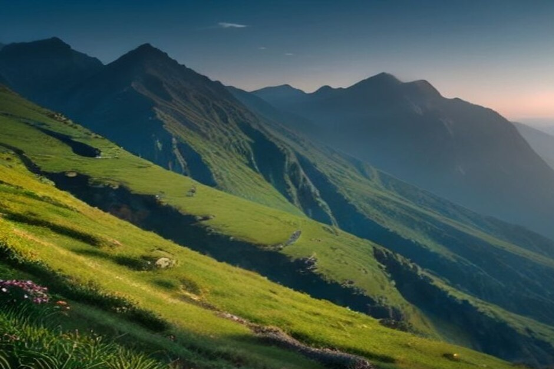
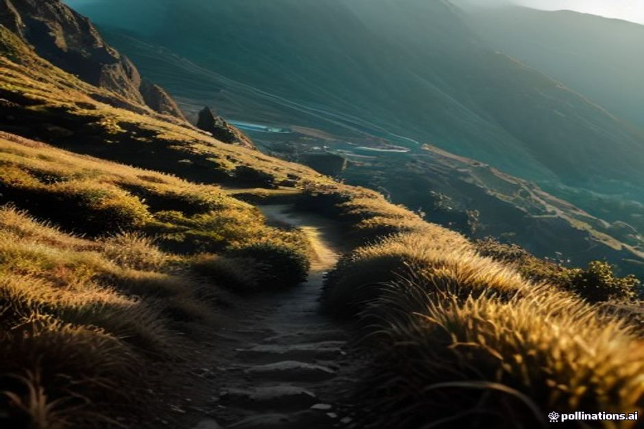

Wer nach den besten Wanderwegen auf Madeira sucht, landet schnell bei denselben zwei Namen: Levada do Furado und Pico do Arieiro. Dabei gibt es auf der Insel Hunderte Kilometer Wege, und die Unterschiede zwischen den Touren sind groß. Hier finden Sie zehn Wanderungen nach Schwierigkeitsgrad sortiert, mit Dauer, Buchungspflicht und Kosten, damit Sie die Tour wählen, die zu Ihrer Kondition und Ihrem Urlaubstag passt.
Wie wir die Schwierigkeitsgrade der Levada-Wanderungen einordnen
Madeiras Levadas sind alte Bewässerungskanäle, entlang derer die Wege meist fast ohne Steigung verlaufen. Das verführt dazu, jede Levada-Wanderung für einen Spaziergang zu halten. Das stimmt nicht. Entscheidend sind weniger Länge und Höhenmeter als drei andere Dinge: unbeleuchtete Tunnel, schmale Abschnitte mit Abbruch zur Seite und die Frage, ob Sie Schatten haben oder nicht.
Die Einteilung unten ist unsere eigene Einordnung nach diesen Kriterien, keine amtliche Skala. Die offiziellen Wanderwege tragen die Kürzel PR (zum Beispiel PR11 oder PR1). Dazu kommen kommunale Levada-Wege ohne PR-Nummer.
Buchen Sie vorab: Das gilt 2026 für die PR-Wanderwege
Seit 2026 braucht jeder offizielle PR-Wanderweg auf Madeira ein Zeitfenster, das Sie über das staatliche Portal SIMplifica buchen. Das betrifft unter anderem PR1, PR6, PR8, PR9, PR10 und PR11. Manche Zeitfenster sind kostenlos, andere kosten wenige Euro (Angaben bei den Touren unten).
Kommunale Levada-Wanderungen ohne PR-Einstufung, etwa die Levada do Norte oder die Levada Nova, brauchen in der Regel keine Buchung. Reservieren Sie in der Hauptsaison ein paar Tage im Voraus und speichern Sie die Bestätigung auf dem Handy: In den Bergen kann der Empfang wegbrechen.
Leicht: die besten Wanderwege für den Einstieg
Vereda dos Balcões (PR11), ab Ribeiro Frio
Die richtige Wahl, wenn Sie vor dem Wandern auf Madeira etwas Respekt haben. Die PR11 folgt der Levada da Serra do Faial rund 1,5 km durch dichten Lorbeerwald, fast ohne Höhenunterschied. Am Ende steht ein Felsbalkon mit weitem Blick auf die zentralen Gipfel. Mit Pause am Aussichtspunkt sind die meisten in etwa 90 Minuten zurück am Parkplatz. Auch hier ist ein kostenloses Zeitfenster über SIMplifica nötig.

Levada Nova, von Arco da Calheta nach Ponta do Sol
Ein flacher, kommunaler Levada-Weg durch Bananenterrassen an der sonnigen Südwestküste. Hier sind deutlich weniger Wanderer unterwegs als an den bekannten Wegen im Inselinneren. Es ist kein PR-Wanderweg, Sie brauchen also keine Buchung: hingehen, dem Wasserkanal folgen, ein paar ruhige Stunden mit Meerblick genießen statt Lorbeerwald.
Levada das 25 Fontes (PR6), Rabaçal
Der Klassiker, mit dem fast jeder Reiseführer beginnt. Rund 9 km hin und zurück ab dem Forsthaus von Rabaçal, größtenteils auf flachem Levada-Pfad, bis zu einem moosbewachsenen Felsenrund, das von Dutzenden kleiner Quellen gespeist wird. Das SIMplifica-Zeitfenster kostet etwa 3 € pro Erwachsenem. Das Wasser ist so kalt, dass die meisten eher hineinwaten als schwimmen.
Mittel: Wenn Tunnel, Sonne und schmale Pfade dazukommen
Levada do Risco (PR6.1), Rabaçal
Das erste Stück teilt sich die Route mit der 25 Fontes, dann zweigt sie ab und führt in unter einer Stunde pro Richtung zu Madeiras höchstem Wasserfall mit freiem Fall. Der Haken ist ein rund 800 Meter langer, unbeleuchteter Tunnel. Nehmen Sie eine Stirnlampe mit, denn nur mit dem Blitzlicht des Handys wird der Durchgang schnell ungemütlich.
Levada do Norte, Abschnitt Cabo Girão
Dieser mittelschwere Abschnitt verläuft entlang der Klippe oberhalb von Cabo Girão und weiter Richtung Fajã dos Padres. Waldpfade wechseln sich mit echtem Meerblick ab, den die meisten Levadas im Inselinneren nicht bieten. Eine SIMplifica-Buchung ist nicht nötig, weil der Weg nicht zum PR-System gehört.
Vereda do Caldeirão Verde (PR9), Queimadas
Ab dem Waldpark Queimadas bei Santana sind es rund 6,5 km pro Richtung, also 13 km hin und zurück. Der Weg führt durch vier unbeleuchtete Vulkantunnel zu einem grünen Becken unter einem 100 Meter hohen Wasserfall. Auf dem Papier gilt er als leicht bis mittel. Schmale, offene Abschnitte über der Schlucht machen ihn aber ernster, als die Zahlen vermuten lassen. Das Zeitfenster kostet etwa 4,50 € pro Person, Stirnlampe nicht vergessen.
Vereda da Ponta de São Lourenço (PR8)
Der trockenste und kargste Weg der Insel: 8 km hin und zurück über einen kahlen Vulkangrat, der Ozean auf beiden Seiten, auf der ganzen Strecke kein Schatten. Konditionell ist er leicht bis mittel, doch Sonne und Wind machen ihn anstrengender, als die Distanz sagt. Planen Sie reichlich Wasser und Sonnenschutz ein. Das Zeitfenster kostet etwa 4,50 € pro Erwachsenem. Der letzte Abschnitt bis Ponta do Furado ist seit Jahren wegen Steinschlaggefahr gesperrt.
Anspruchsvoll: Diese Wanderungen verlangen Trittsicherheit
Levada do Furado (PR10), Ribeiro Frio bis Portela
Mit rund 11 km pro Richtung ist die PR10 die längste Wanderung dieser Liste, und sie überrascht alle, die einen weiteren gemütlichen Levada-Spaziergang erwarten. Der Weg führt durch Lorbeerwald und mehrere Tunnel, teils mit wirklich exponierten Abbrüchen auf einer Seite. Die meisten brauchen 4 bis 5 Stunden, dazu kommt der Rücktransport ab Portela, den Sie vorher organisieren sollten. Trittsicherheit zählt hier mehr als bei den Wegen weiter oben.
Verlängerung zum Caldeirão do Inferno (PR9.1)
Am Ende des Caldeirão Verde geht es in weiteren 45 Minuten bis zu einer Stunde zu einem zweiten, abgelegeneren Wasserfall, den die meisten Tagesausflügler auslassen. Deshalb ist es dort ruhiger. Der Pfad wird aber noch schmaler und ist nach Erdrutschen gelegentlich gesperrt. Prüfen Sie den Status bei SIMplifica gesondert, und wagen Sie sich nicht weiter, wenn Sie nach den ersten 6,5 km schon erschöpft sind.
PR1, Pico do Arieiro bis Pico Ruivo
Die berühmte Gratwanderung zwischen Madeiras drittem und höchstem Gipfel. Rund 7 km pro Richtung, etwa 500 Meter Auf- und Abstieg zusammen, mehrere unbeleuchtete Vulkantunnel und schmale Passagen mit steilen Abbrüchen auf beiden Seiten. Seit der Wiedereröffnung 2026 nach den Waldbrandschäden wird sie nur noch in eine Richtung begangen, und zwar ab Pico do Arieiro. Das Zeitfenster bei SIMplifica kostet 10,50 € pro Person. Einheimische und Kinder unter 12 Jahren wandern nach Registrierung kostenlos.
Bei schlechtem Wetter oder mit Höhenangst ist das nichts für Sie. Dafür bekommen Sie den besten Bergblick der Insel.

Welche Wanderung passt zu wem?
- Erster Wandertag auf Madeira: Vereda dos Balcões (PR11), etwa 90 Minuten.
- Ruhe, Meer und keine Buchung: Levada Nova oder Levada do Norte.
- Wasserfälle mit wenig Aufwand: 25 Fontes und Levada do Risco ab Rabaçal.
- Abenteuer mit Tunneln: Caldeirão Verde ab Queimadas.
- Kein Schatten, viel Geologie: Ponta de São Lourenço (PR8).
- Lange Tour mit Kondition: Levada do Furado (PR10), 4 bis 5 Stunden.
- Der Bergtag des Urlaubs: PR1, nur bei stabilem Wetter.
Packliste und Planung
Feste, geschlossene Schuhe mit gutem Profil sind Pflicht. Eine leichte Regenjacke gehört unabhängig von der Küstenprognose in den Rucksack. Dazu Wasser, eine Stirnlampe für die Tunnel und die Buchungsbestätigung offline auf dem Handy.
Schauen Sie am selben Morgen den Bergwetterbericht an. Oben ändert sich das Wetter schneller als unten an der Küste. Mehr zur Organisation vor Ort finden Sie in unseren praktischen Infos.
Die Küste schenkt Ihnen den Atlantik. Die Wanderwege zeigen Ihnen, was Madeira gebaut hat, um sein Wasser bis dorthin zu bringen.
Wandern am Vormittag, aufs Wasser am Nachmittag
Die Levada do Norte bei Cabo Girão endet in der Nähe von Fajã dos Padres, der einzigen Bucht dieser Liste, die Sie auch vom Wasser aus erreichen. Auf der Tagestour von Chifbay ist dort ein Badestopp mit Paddle Boards vorgesehen. Die Tour startet um 10:00 oder 14:00 Uhr an der Marina do Funchal, Steg C. Sie führt nach Câmara de Lobos und Cabo Girão und dauert 2 Std. 30 bis Ribeira Brava (500 €) oder 3 Std. bis Ponta do Sol (600 €).
Der Preis gilt für das ganze Boot, für eine Gruppe von bis zu fünf Gästen, mit zwei einheimischen Skippern. Essen und Getränke an Bord, ein 360°-Video, Drohnenaufnahmen (wetterabhängig) und Fotos mit einer richtigen Kamera sind inklusive. Wenn Sie lieber nach der Wanderung nur entspannen möchten, ist die Sonnenuntergangsfahrt eine Alternative: Sie startet 1 Std. 15 vor Sonnenuntergang, ganzjährig, 2 Std. bis Cabo Girão für 400 € oder 2 Std. 30 bis Ribeira Brava für 500 €, ohne Badestopp. Kostenlos stornieren können Sie bis 24 Stunden vor Abfahrt.
Als Kombination bietet sich eine Wanderung am Vormittag und die Fahrt am Nachmittag an, mit einem Mietwagen für den Weg zwischen beidem. Einen Überblick über alle Möglichkeiten gibt unser Artikel zu den besten Bootstouren auf Madeira.